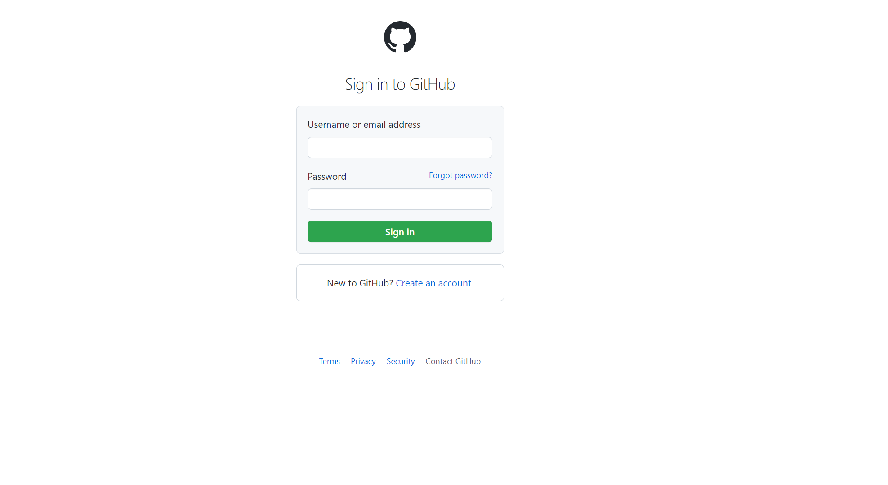
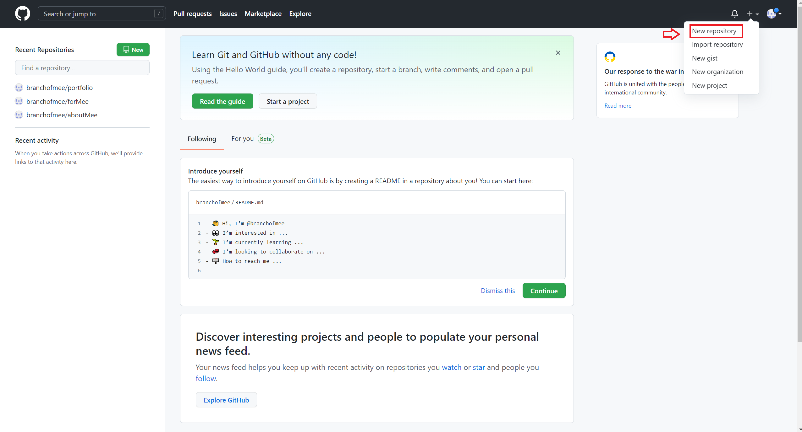
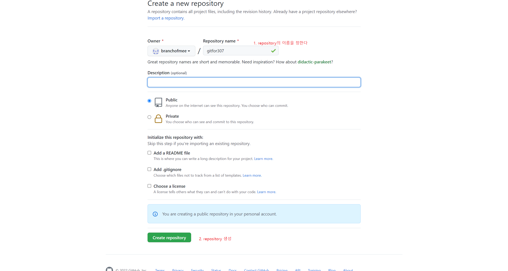
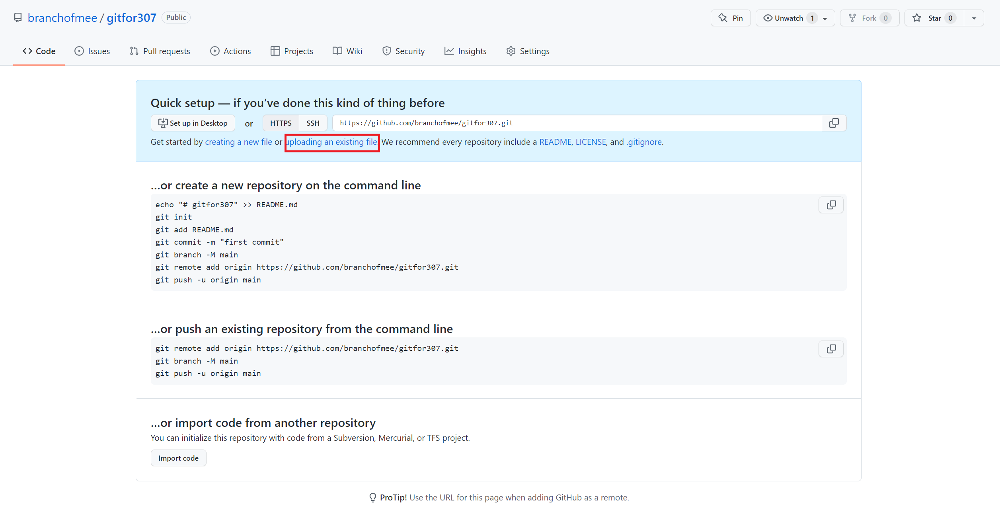
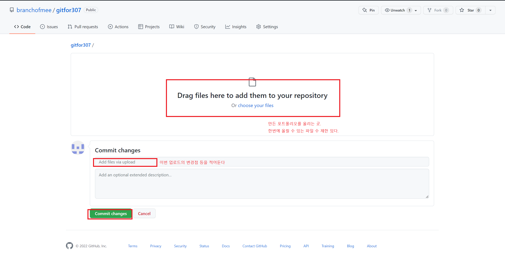
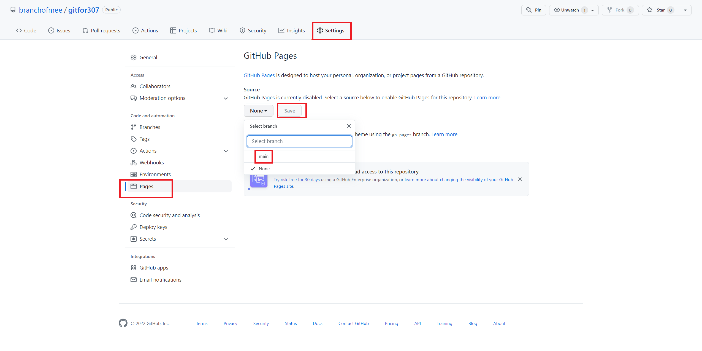
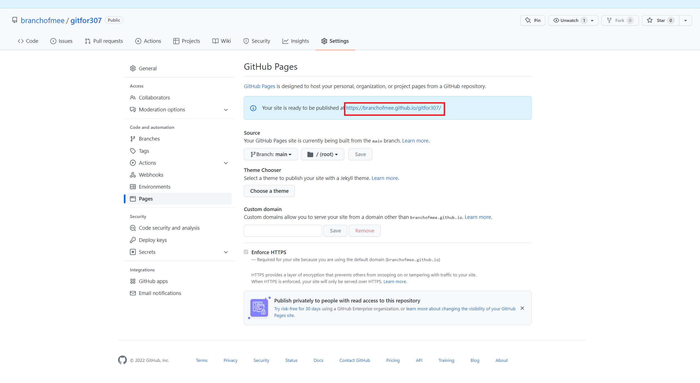
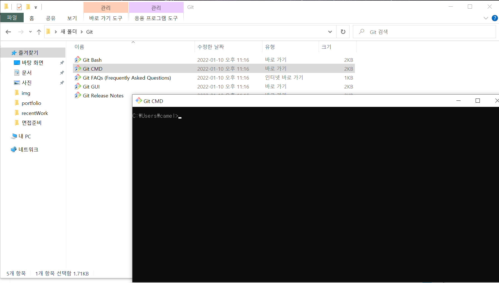

git으로 포트폴리오 업로드
1. https://github.com/ 에 로그인
2. 우측상단의 +를 클린한 다음 New repository를 클릭
3. Repository name을 정한 후, create repository 클릭하여 repository를 생성한다.
4-1. 여러가지 방법으로 repository를 관리할 수 있는데 제일 쉬운 방법은 github에서 직접 업로드 하는 것이다. 이경우 uploading an existing file을 클릭
업로드할 파일을 올리고, 코멘트를 단 후 commit changes를 클릭한다

정상적으로 진행했다면 다음과 같은 화면이 나올 것이다.
이제 이 파일을 사용해보자 setting->pages페이지로 가서 none상태인 source를 main으로 바꾼 후 save버튼을 누른다
성공하면 다음과 같은 화면이 나온다. 박스 친 주소가 포트폴리오가 보일 주소이다.
나는 index페이지가 main페이지니까 실제 접속 주소는 뒤에 /index를 붙여서
https://branchofmee.github.io/gitfor307/index
가 될 것이다.
수정과 파일 추가도 동일한 방식(uploading and exisitng file 사용)으로 진행하면 되며,
반영에 몇 분 걸리니까 바로 안 뜰 수도 있음
4-2 vscode로 깃 관리//작성중!!
vscode로 깃을 관리하는 방법도 있다.

git을 설치했다면 git cmd를 열고 로그인을 한다.
git config --global user.name "가입할 때 적은 이름"
git config --global user.email "가입할 때 적은 이메일"
정상적으로 진행했다면 로그인이 완료된다.